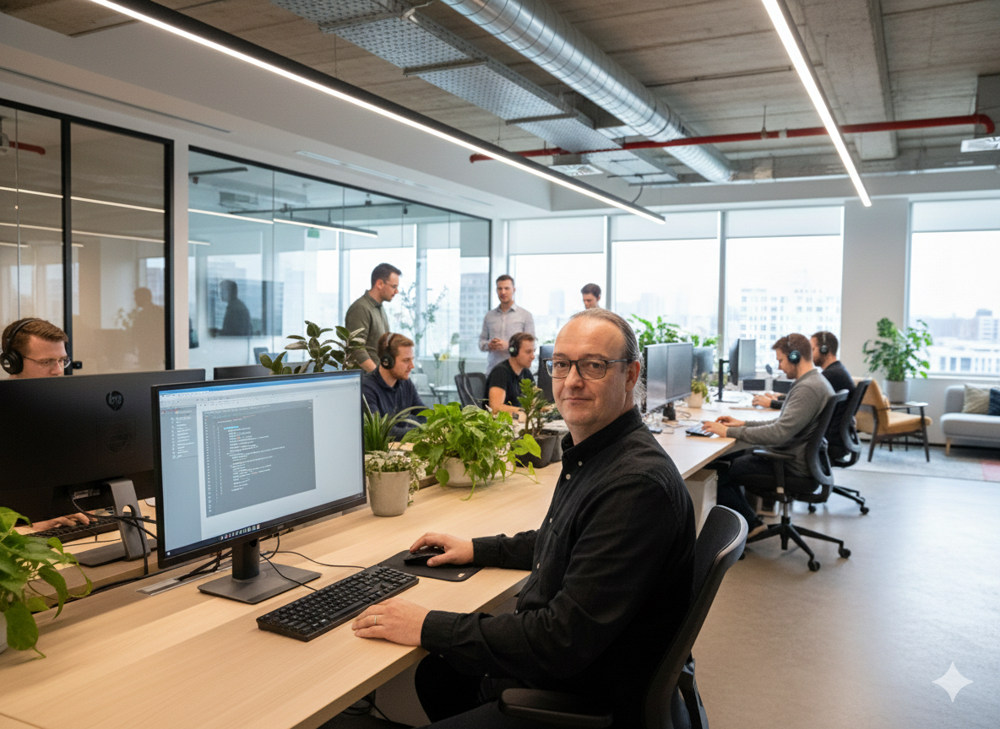
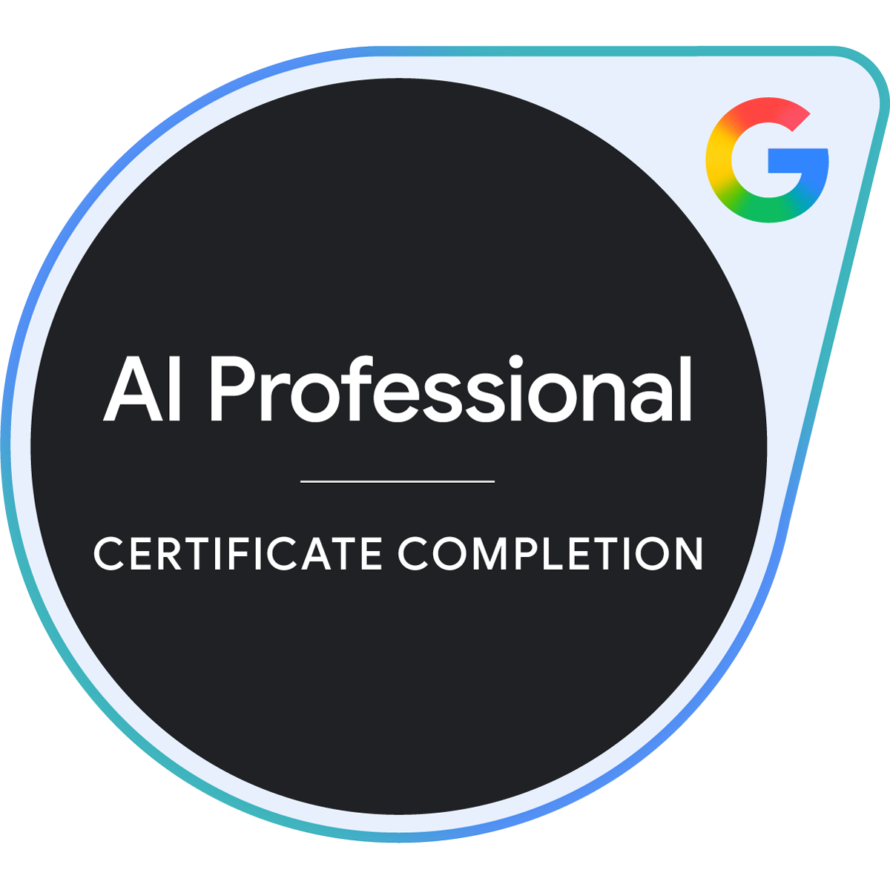
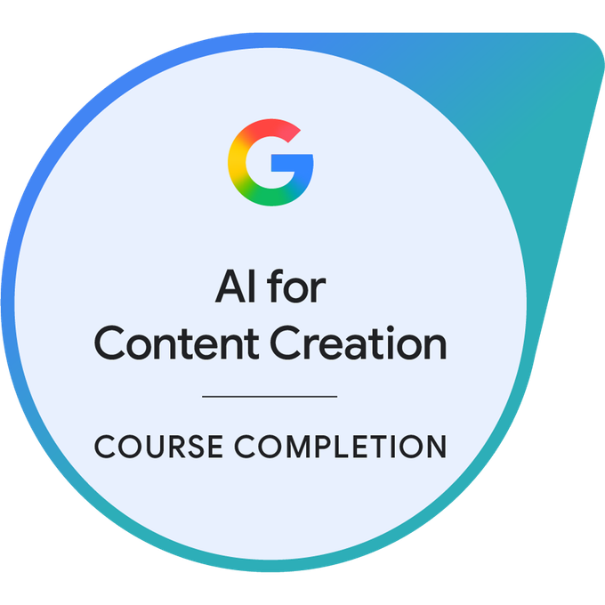
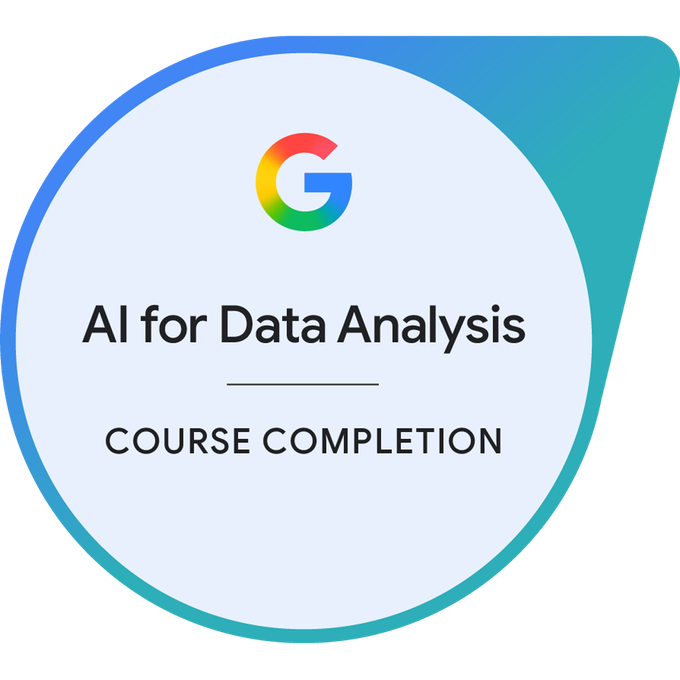
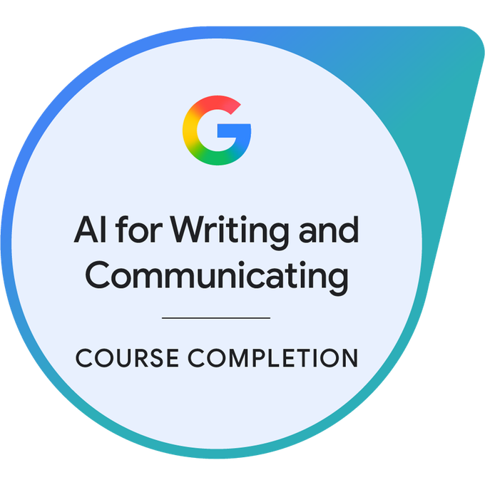
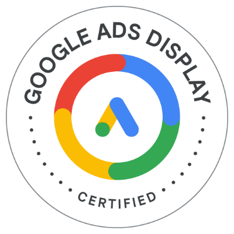
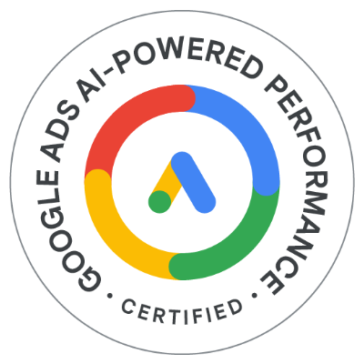
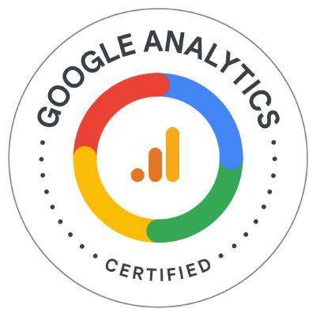

Web Development
Création complète Web
Déploiement d'une présence digitale pour une société en énergies renouvelables.
Ancien Officier Marinier et manager technique, je mets 20 ans de leadership, de gestion de crise et d'exigence au service de votre transformation digitale.


Ancien Officier Marinier et Responsable Technique, je transitionne aujourd'hui vers les métiers du Digital pour mettre ma rigueur au service de l'analyse stratégique.
En Mastère Data & IA, je travaille avec Python, SQL et le No-Code (Odoo, Synchroteam) pour structurer et exploiter les données complexes.
Que ce soit de la veille, de la priorisation, de la transformation de site, du SEO, ou même de la gestion de réseaux sociaux, tout est travaillé pour une visbilité optimale.
Plus de 10 ans à diriger des services et des équipes techniques (jusqu'à 20 techniciens ou 25 entreprises extérieures), garantissant performance et respect des budgets.
Expert en diagnostic technique et gestion de crise, une compétence forgée dans la Marine Nationale et des sociétés spécialisées en énergie.
Plus de 20 ans d'expérience entre rigueur militaire et expertise technique.
DRIMM, Groupe Séché
KALORIO
V2M34
Volny Moget
Groupe ENR (AJ Confort, EVOSYS)
TIME SAV
Marine Nationale
Un apprentissage continu pour rester à la pointe de l'innovation technique.
ESDIC
Certification Niveau 7 - RNCP39234
Stratégie Digitale, Gestion de Projet, Data, IA, Cybersécurité, Gestion de risque, Expérience utilisateur
STUDI
Certification Niveau 7 - RNCP36287
Management des technologies de l'information et stratégie digitale.
LINKUP COACHING
Certification Niveau 7 - RNCP31143
Conseil en Management
AFPA
Expertise technique en systèmes de climatisation et froid industriel.
Ecole du personnel volant de la Marine Nationale
Formation de navigant et spécialisation en électronique embarquée.









Module 1 : Le RGPD et ses notions clés
Module 2 : Les principes de la protection des données
Module 3 : Les responsabilités des acteurs
Module 4 : Le DPO et les outils de la conformité
Module 5 : Les collectivités territoriales
Module 6 : Travail et données personnelles
Certifications BAT et ELEC pour les installations photovoltaïques.
Parcours complet interne Groupe Séché : Gérer et sécuriser ses accès, reconnaître le phishing.
Formation vidéo interne Groupe Séché : Utilisation collaborative sur Mobile.
Une double compétence rare : la maîtrise de la donnée alliée à une solide expérience du terrain.
Focus : Transformation de données brutes en indicateurs de performance (KPI).
Focus : Capacité à évoluer dans un environnement technique anglophone.
Focus : Automatisation de processus et création d'outils de gestion sur mesure.
Focus : Maintenance préventive et gestion des interventions terrain complexes.
Focus : Management en environnement exigeant.
Une expertise technique au service de votre transformation numérique en 2026.
Fini les rapports papier et les fichiers Excel obsolètes.
Face aux contrôles renforcés sur les CEE, je sécurise vos processus de maintenance (Solaire, éolien, HVAC).
Transmettre votre savoir technique à l'ère du numérique.
J'aide les centres de formation et entreprises à absorber la forte demande de recrutement du secteur.
Transformez la conformité RGPD en levier d'acquisition client.
Face à la fin des cookies tiers et aux contrôles de la CNIL, je sécurise vos données et optimise vos tunnels de vente à distance.
Format : Accompagnement à distance ou sur site.
Demander une étude de besoinDes solutions concrètes alliant logique de programmation et efficacité métier.
Déploiement d'une présence digitale pour une société en énergies renouvelables.

Architecture d'une base de données clients avec calcul de marge et gestion de planning.

Centralisation des ressources techniques pour les interventions terrain (2013).

Conception de fiches d'intervention et de suivi pour la formation froid.

Déploiement d'un outil d'aide aux arbitres de football américain en France.

Mise en place PCA, PRA, Analyses de risques...
Mise en avant de la RGPD
Besoin d'un expert pour piloter vos projets Data ou encadrer vos équipes ? Parlons-en.
Castelsarrasin, France
+33 6 15 12 41 13